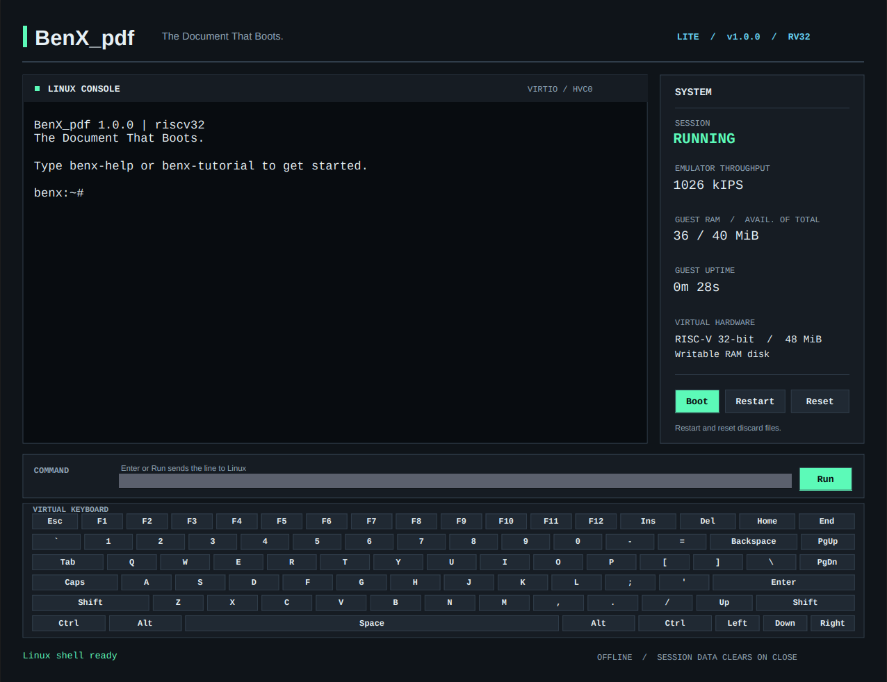
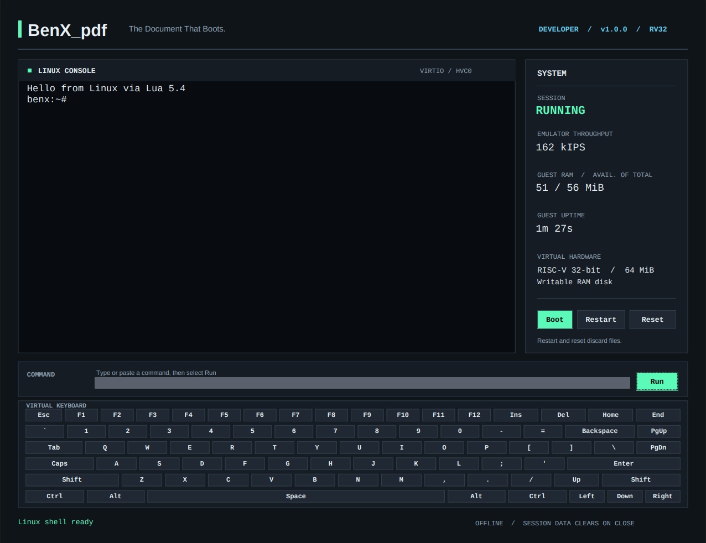

RV32 · 48 MiB guest RAM
Lite
BusyBox shell, vi, shell scripting, AWK, system tools, and a hands-on Linux tutorial.
Download Lite PDFA real Linux workstation in one PDF. Open it in desktop Chromium, wait for the BusyBox prompt, and start working inside an emulated RISC-V machine.
Download the PDF and open it from desktop Chrome or Chromium. Google Drive and ChatGPT show static previews.

Each download contains its own emulator, firmware, Linux kernel, and writable root disk.
RV32 · 48 MiB guest RAM
BusyBox shell, vi, shell scripting, AWK, system tools, and a hands-on Linux tutorial.
Download Lite PDFRV32 · 64 MiB guest RAM
Adds Lua 5.4, its bytecode compiler, and c4 for compiling and running a small C subset.
Download Developer PDFRV64 · 96 MiB guest RAM
A 64-bit Linux guest with more RAM and a script to inspect CPU, memory, mounts, and load.
Download Advanced PDFLinux runs in the browser’s PDF JavaScript sandbox. The browser sees one page and its form fields. The guest sees a RISC-V processor, RAM, a console, and a block device.
The command box sends bytes to /dev/hvc0. The guest shell executes the command and writes back to the same console. The viewer updates rows whose text changed.

Chromium’s built-in viewer interprets the asm.js CPU. Guest boot and command latency depend on the host and whether the tab is in the foreground.
| Metric | LinuxPDF RV32 | BenX Lite |
|---|---|---|
| PDF size | 6.28 MB | 3.83 MB |
| Time to shell | 58.3 s | 40.5 s |
| Median displayed boot throughput | 1,051 kIPS | 1,650 kIPS |
| Median Enter to visible change | 459 ms | 486 ms |
| Visible changes during scroll sampling | 3 of 13 samples | 1 of 21 samples |
Download the original PDF to your computer. In desktop Chrome or Chromium, press Ctrl+O (⌘O on Mac), select the PDF, and wait for RUNNING. Try benx-info or benx-tutorial.
WAITING FOR JS is the opening message. If it stays visible in a preview, open the downloaded file from the desktop browser.
Firefox PDF.js, macOS Preview, Acrobat, and mobile viewers are outside the supported runtime. JavaScript must be enabled by the viewer.
Read the Linux and Docker build guidegit clone https://github.com/NateshKannaR/BenX_pdf.git
cd BenX_pdf
./build.sh lite
# Output
out/BenX_Lite.pdf